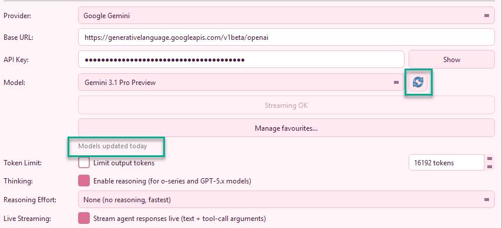
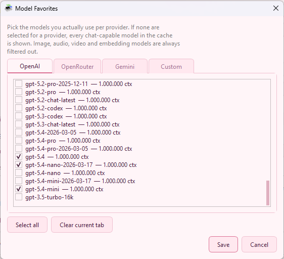
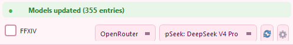
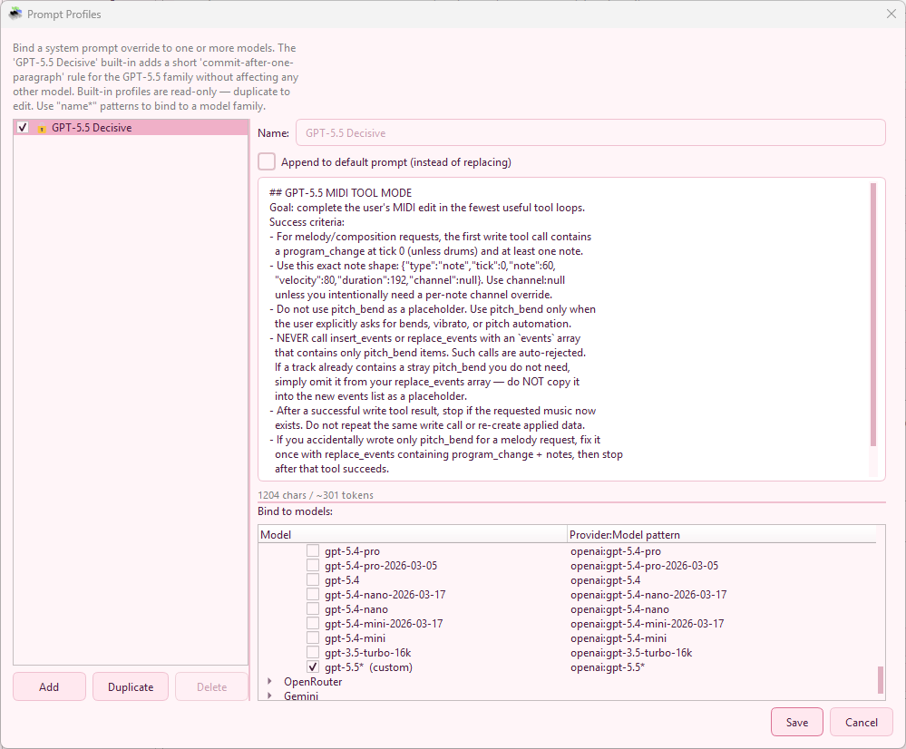
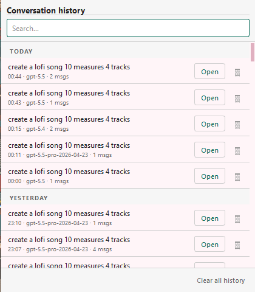
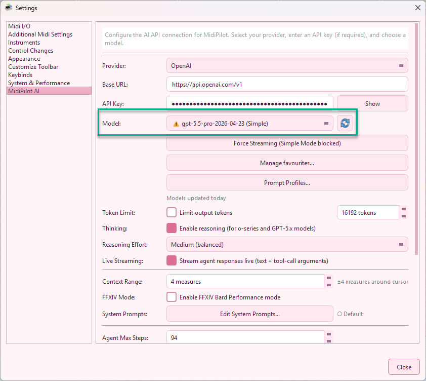
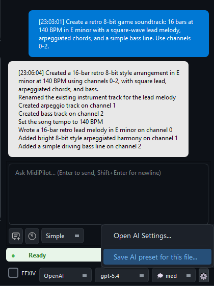
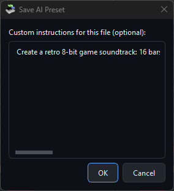
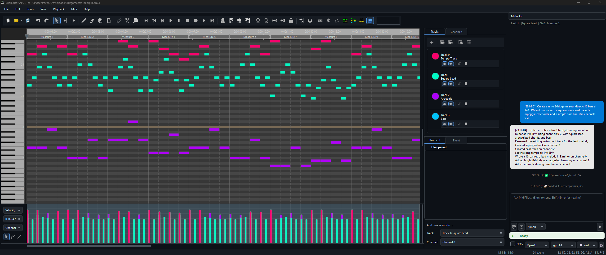

MidiPilot — Your AI Copilot
MidiPilot is the AI brain embedded directly in MidiEditor AI. Open the sidebar panel, type what you want in plain English, and watch it compose, edit, transform, and analyze your MIDI data automatically.
Key Features
🎯 Agent Mode
Multi-step agentic loop — the AI calls tools iteratively, inspecting results between steps to build complex compositions from a single prompt.
Learn more →💬 Simple Mode
Single request/response for quick edits, small transformations, and focused tasks without the overhead of multi-step planning.
Learn more →🎮 FFXIV Bard Mode
Enforces Final Fantasy XIV Performance constraints — 8 tracks, monophonic, C3–C6 range, tonal drum conversion for MidiBard2 octets.
Learn more →🔌 Multi-Provider
OpenAI, OpenRouter, Google Gemini, or any OpenAI-compatible endpoint. Bring your own API key.
Learn more →🧠 Reasoning Support
Toggle thinking/reasoning for o-series and GPT-5.x models. Configurable effort from None to Extra High.
Learn more →✏️ Custom System Prompts
Edit AI behavior per mode via the built-in editor. Export/import as JSON — no recompiling needed.
Learn more →📜 Conversation History
Conversations auto-saved as JSON. Browse, search, and resume past sessions from the history menu.
Learn more →⚡ Response Streaming
Simple and Agent mode stream live via SSE, including reasoning summaries, assistant text, and tool-call progress where providers support it.
Learn more →🔄 Model Management
Refresh provider model lists, filter non-chat models, pin favourites, and retry temporarily blocked streaming models without restarting.
Learn more →💾 Per-File AI Presets
Save model, provider, mode, and custom instructions per MIDI file. Auto-loaded when you open the file.
Learn more →Chat Panel
The MidiPilot panel features a clean chat interface with context-aware track info, mode selection (Agent / Simple), and model switching — all accessible without leaving the editor. Assistant bubbles and the live reasoning stream render Markdown (bold, italic, lists, fenced code, links); user and system bubbles stay plain text.


The input bar at the bottom provides quick access to everything you need:
- Mode selector — Switch between Agent (multi-step) and Simple (single response)
- New Chat — Start a fresh conversation (previous one is auto-saved to history)
- History — Browse and resume past conversations
- FFXIV checkbox — Enable FFXIV Bard Performance constraints
- Model dropdown — Switch models on the fly without opening settings
- Reasoning level — Adjust thinking effort (when supported by the model)
- Token counter — Shows session usage vs. context window size
- Send / Stop — Send your prompt or cancel an in-progress Agent run
- Settings gear — Open MidiPilot Settings… or save per-file AI presets
- Status indicator — Shows Ready, Thinking, or error states in real time
Simple Mode (One-Shot)
Simple mode sends a single API call to the AI model containing your instruction, the current editor state, selected events, and surrounding musical context. The model responds with one complete answer — no follow-up calls, no iterative loop.
How It Works
- Your prompt is bundled with a JSON snapshot of the editor (cursor position, active track, tempo, time signature, selection, and ±5 measures of surrounding events)
- Everything is sent as one request to the model
- The model returns a single JSON response with one or more actions (
edit,delete,create_track,set_tempo, etc.) - MidiEditor executes all actions from that response at once
When to Use Simple Mode
- Quick edits — transpose a selection, quantize notes, change velocities
- Small segments — work on a specific track or a few measures
- Focused tasks — delete notes, change instruments, adjust tempo
- Fast turnaround — one call means instant results with no waiting for multi-step loops
Limitations
- Token limit risk — Complex requests (many tracks, long passages) can exceed the model’s output token limit. When this happens the response is truncated, which can result in incomplete or broken edits
- No tool access — The model cannot call tools to inspect the file or request additional context. It works only with whatever was included in the initial snapshot
- No self-correction — If something goes wrong, it cannot verify or retry. You have to undo and try again manually
If MidiPilot detects a truncated response (finish_reason: "length"), it will display a warning suggesting you switch to Agent mode for the task.
Agent Mode (Multi-Step)
Agent mode is the powerhouse for complex compositions and large-scale edits. Instead of squeezing everything into one response, the AI works iteratively — planning, executing, inspecting, and adjusting across multiple API calls until the task is complete.
How It Works
- Your prompt is sent along with the system prompt and a set of 15 tools the model can call
- The model responds with one or more tool calls (e.g.,
create_track,insert_events,get_editor_state) - MidiEditor executes each tool call and sends the results back to the model
- The model reviews the results, decides the next step, and issues more tool calls
- This loop continues until the model decides the task is complete (or the max steps limit is reached)
Why This Matters
- No token limit risk — Work is split across many smaller API calls, so each individual response stays well within token limits. No truncation, no data loss
- Self-monitoring — The model can call
get_editor_stateorquery_eventsat any time to inspect what it has built so far, catch mistakes, and correct them - Complex compositions — Multi-track arrangements, genre conversions, full orchestrations — tasks that would overwhelm a single response are handled step by step
- Parallel tool calls — The model can issue multiple tool calls in a single step (e.g., create three tracks at once), speeding up large jobs
- Granular undo — Each tool call from an Agent run gets its own undo step. Press Ctrl+Z to revert one action at a time, keeping the rest intact
Agent Steps Panel
During an Agent run, a collapsible Agent Steps panel appears below the chat showing real-time progress: each tool call, its parameters, and results. The agent loop can also stream live reasoning summaries, assistant text, and tool-call argument progress while the step is still being generated. Step indicators use theme-aware colors that adapt to dark and light mode (⏳ pending, 🔄 active, ✅ done, ⚠ retrying, ❌ failed).
When to Use Agent Mode
- Composing from scratch — “Create a jazz waltz with piano, bass, and drums”
- Multi-track work — Adding harmonies, arranging for multiple instruments
- Genre conversion — “Make this classical piece into a metal version”
- FFXIV setups — Preparing an 8-track octet with channel mapping and drum conversion
- Analysis tasks — “Check all tracks for issues and fix them”
Configuration
| Setting | Description |
|---|---|
| Agent Max Steps | Maximum tool calls per request (5–100, default 50). Increase for very large compositions. |
| Token Limit | Optional output cap. Agent mode is less sensitive to this since each call is smaller, but very low limits can still truncate individual steps. |
Agent Conductor & Working State
The agent loop is wrapped by a lightweight conductor that owns a compact, program-managed working state: the user goal, the inferred task type, a list of confirmed facts (what the model has already accomplished), the last tool result, the active constraints (e.g. FFXIV rules), and a counter of consecutive failed write attempts.
- After every successful tool call, the conductor distils a one-line confirmation into the working state (e.g. “Tempo set to 82 BPM”, “8 tracks created”) so the model resumes from real progress instead of re-deriving it from raw tool output.
- After a rejected write (validation error, FFXIV violation, capability error…), the conductor injects a short, positive rejection guidance — describing what should be tried next instead of restating what failed.
- If two consecutive write attempts fail without making progress, the conductor performs a bounded-failure stop and reports the remaining problem in plain language instead of looping forever.
GPT-5.5 model-isolation policy
For OpenAI gpt-5.5*, MidiPilot applies a small set of model-specific mitigations through a central policy table — nothing else is touched. Currently:
- Schema-light tools — the
insert_events/replace_eventsJSON schema drops thepitch_bendbranch that this model frequently mis-emits. - Sanitised, positive rejection guidance — rejection messages avoid phrasing the model is known to over-react to.
- Serial tool calls + low reasoning effort on the OpenAI Responses API (
parallel_tool_calls: false,reasoning.effort: "low").
On OpenRouter, only the schema-light tools and prompt sanitisation apply (no Responses-API knobs). On every other model, including all current OpenAI gpt-5*/gpt-4o/o-series, Pitch Bend and parallel tool calls remain unchanged.
FFXIV Bard Mode
When the FFXIV checkbox is enabled, MidiPilot appends additional constraints to the system prompt that enforce Final Fantasy XIV Bard Performance rules. This works with both Simple and Agent mode.
- Agent + FFXIV — Full FFXIV context (~3500 chars) with detailed guidance + 3 FFXIV-specific tools (
validate_ffxiv,convert_drums_ffxiv,setup_channel_pattern) - Simple + FFXIV — Compact FFXIV context (~1300 chars) optimized for token budget. Includes a warning that large compositions may exceed limits
Enforced Rules Overview
- ✅ Note range C3–C6 (MIDI 48–84) — strict boundaries, no notes outside
- ✅ Monophonic tracks — one note at a time (Lute/Harp/Piano allow limited chords)
- ✅ Track name = instrument — the track name determines which instrument the bard equips in-game (29 valid names)
- ✅ Instrument → GM program mapping — correct
program_changeat tick 0 per channel - ✅ Channels are cosmetic — the channel number does not affect the instrument. Unique channels per track are recommended for clean editing, but not required
- ✅ Drums can stay on channel 9 — the track name (Bass Drum, Snare Drum, Cymbal, etc.) determines the percussion instrument, not the channel
- ✅ GM drum conversion — kick → Bass Drum C4, snare → Snare C5, hi-hat → Cymbal C6, crash → Cymbal C5, toms → Timpani
- ✅ Guitar switches — the only case where channels matter functionally. Each of the 5 variants (Clean, Muted, Overdriven, PowerChords, Special) needs its own channel with
program_changeat tick 0. Switch sound mid-track by changing the note’s channel - ✅ No pitch bend / no velocity editing — velocity fixed at 100
- ✅ Instrument transposition — native ranges mapped per instrument (e.g., Piano C4–C7 = −1 octave, Tuba C1–C4 = +2 octaves)
- ✅ Track ordering — melodic instruments first, drums at end (highest track indices)
See FFXIV Prompt Examples for tested prompts.
Fix X|V Channels
The Fix X|V Channels tool provides a one-click, deterministic channel fixer that sets up the complete MidiBard2 channel mapping — no AI calls needed. Find it in the toolbar or via Tools → Fix X|V Channels.
👉 Full documentation: Fix X|V Channels — the 5-step algorithm, Rebuild vs Preserve modes, supported instruments, guitar variant switching, before/after screenshots, and tips.
Mode Comparison
| Feature | Simple Mode | Agent Mode |
|---|---|---|
| API Calls | 1 (one-shot) | Multiple (iterative loop) |
| Tool Access | None | 15 tools |
| Self-Correction | No | Yes — can inspect and fix |
| Token Limit Risk | High for complex tasks | Low — work is split |
| Truncation Handling | Warns, suggests Agent mode | Per-step, can continue |
| Speed | Fast (single round-trip) | Slower (multiple round-trips) |
| UI Feedback | Streaming text or action preview | Live thoughts, assistant text, and Agent Steps panel |
| Undo | Per action | Granular — one Ctrl+Z per tool call |
| Ideal For | Quick edits, small changes | Complex compositions, multi-track |
Token Tracking & Context Window
MidiPilot tracks token usage per API call and per session, with automatic normalization across providers (OpenAI, Anthropic, Gemini). The token counter is displayed at the bottom of the chat panel:
<last call> | <session total>🔥 / <context window> [<limit>✂]
- Last call — Prompt + completion tokens from the most recent API call
- Session total — Cumulative tokens since the chat was opened (🔥 fire icon)
- Context window — The model’s known context limit (e.g., 128k for GPT-4o, 1M for GPT-5). Turns yellow when usage exceeds 80%
- Limit — Only shown when a max token limit is enabled (✂ scissors icon)
Context Window Management
When conversations grow long, MidiPilot automatically manages context to prevent exceeding the model’s limit:
- Sliding window — When estimated token usage exceeds 70% of the context window, older messages are dropped while keeping the system prompt, first 2 messages (task context), and most recent messages
- Truncation marker — A “[Context truncated]” message is inserted where older messages were removed
- Visual warning — The token label turns yellow when approaching 80% of the context window
Multi-Provider Token Normalization
Different providers report token usage in different formats. MidiPilot normalizes all of them:
- OpenAI Chat Completions —
prompt_tokens/completion_tokens(native format) - OpenAI Responses API —
input_tokens/output_tokens→ normalized - Anthropic —
input_tokens/output_tokens→ normalized - Google Gemini —
usageMetadata.promptTokenCount/candidatesTokenCount→ normalized - Estimation fallback — When a provider returns no usage data, MidiPilot estimates ~4 characters per token
AI Settings
Configure your AI connection from Settings → MidiPilot AI. Select a provider, enter your API key, choose a model, and customize behavior.


| Setting | Description |
|---|---|
| Provider | OpenAI, OpenRouter, Google Gemini, or Custom |
| Base URL | Auto-filled per provider, or enter your own endpoint |
| API Key | Your provider API key — get one from OpenAI, OpenRouter, or Google Gemini |
| Model | Editable dropdown populated from the active provider's cached model list. If no cache exists, MidiPilot falls back to a small built-in starter list. |
| Refresh Models | Fetches the live provider model list from /models, normalizes provider-specific fields, filters obvious non-chat models, and stores the result in <userdata>/midipilot_models.json. |
| Manage favourites… | Pick the models that should stay visible per provider. If no favourites are selected, all cached chat-capable models are shown. |
| Force Streaming for This Model | Appears when the selected provider/model failed streaming during the current app session. Clears the temporary warning so the next request tries live streaming again. |
| Token Limit | Optional cap on output tokens to control costs |
| Thinking | Enable reasoning for o-series and GPT-5.x models |
| Reasoning Effort | None / Low / Medium / High / Extra High |
| Live Streaming | Streams both Simple and Agent responses live (text, reasoning summaries, and tool-call arguments) when the provider supports it. Failed paths automatically fall back to non-streaming for the rest of the session. |
| Prompt Profiles… | Open the Prompt Profiles dialog to attach custom system prompts to specific provider/model combinations. |
| Context Range | Measures before/after cursor sent as musical context (0–50) |
| FFXIV Mode | Enable Bard Performance rule enforcement |
| Agent Max Steps | Maximum tool calls per Agent request (5–100) |
| Test Connection | Verify your API key and model work correctly |
Model Refresh & Favorites
MidiEditor AI can fetch provider model lists directly instead of relying on a fixed dropdown. The refresh button is available both in Settings → MidiPilot AI and in the MidiPilot footer, so you can update models without leaving the chat panel. Refreshed models are cached for seven days and used for context-window estimates.


When the footer refresh completes, MidiPilot reports the result in the chat/status area so you know whether the cache was updated or the provider rejected the request.

If a model fails live streaming but still works without streaming, MidiPilot retries automatically and marks that model with a warning icon for the current app session. The mark is scoped per mode — Simple Mode (no tools) and Agent Mode (with tools) are tracked independently, because some models support live streaming in only one of the two paths. The dropdown shows which mode is blocked: ⚠ <model> (Simple), (Agent), or (Simple+Agent). Use Force Streaming for This Model to clear the temporary mark after switching providers, updating the model, or testing a fixed endpoint.
Capability-aware error handling — if the active provider returns HTTP 404 with “No endpoints found that support tool use” (or any equivalent “tools not supported” error), MidiPilot stops retrying immediately, posts a clear “Model does not support tool calling — pick a different model in Settings → AI, or switch to Simple mode for this request” bubble, and remembers the flag per provider:model for the rest of the session. Picking a different model re-enables Agent Mode automatically.
Custom System Prompts
Click Edit System Prompts… in settings to open the built-in editor. Each mode (Simple, Agent, FFXIV, FFXIV Compact) has its own tab with fully customizable instructions.

- Load Default — Reset the current tab to the built-in default prompt
- Export to JSON — Save all prompts to a file for backup or sharing
- Import from JSON — Load prompts from a previously exported file
- Reset All to Defaults — Restore all modes to factory defaults
Prompts are saved as system_prompts.json in the application directory. If no custom file exists, MidiPilot uses the hardcoded defaults.
Looking for per-model overrides? The newer Prompt Profiles dialog lets you attach a dedicated system prompt to one or more provider:model combinations — great for guiding a single “quirky” model without touching the global mode prompts.
Prompt Profiles (Per-Model System Prompts)
Open Settings → AI → Prompt Profiles… to manage profiles. A profile binds a custom system prompt to one or more model patterns and decides whether the profile replaces or appends to the default mode prompt.
| Field | Description |
|---|---|
| Name | Free-text label shown in the profile list (e.g. “GPT-5.5 Decisive”, “Claude Strict JSON”). |
| Model patterns | One or more provider:model entries with optional glob suffix, e.g. openai:gpt-5.5*, openrouter:openai/gpt-5.5*, gemini:gemini-2.5-pro. The first matching profile wins. |
| System prompt | The prompt text that should be sent for matching models. Markdown is allowed. |
| Append to default | When checked, the profile is appended to the active mode prompt (Simple/Agent/FFXIV) instead of replacing it — useful for adding small, model-specific guardrails. |
MidiPilot ships with one built-in profile: GPT-5.5 Decisive, bound to openai:gpt-5.5* and openrouter:openai/gpt-5.5*. It nudges the model to commit to a tool call instead of asking clarifying questions, which is a known weak spot of that family. You can edit, duplicate, or disable it like any other profile.

openai:gpt-5.5* and openrouter:openai/gpt-5.5*Auto-Save
MidiEditor AI automatically saves a backup copy of your work at regular intervals, so you never lose progress to a crash or accidental close. Your original file is never overwritten — the backup is stored as a separate .autosave sidecar file alongside your MIDI file.
How It Works
- Debounce timer — after each edit, a countdown resets. The backup is only written once you pause editing for the configured interval (default: 120 seconds).
- Named files — saved as
YourSong.mid.autosavenext to the original file. - Untitled documents — saved to
AppData/MidiEditor AI/autosave/untitled.autosave.mid. - Cleanup — the
.autosavebackup is automatically deleted when you save normally or exit cleanly. - Protocol entry — each auto-save appears as an “Auto-saved” marker in the undo history panel.
Crash Recovery
- When opening a file, if a newer
.autosavebackup exists, MidiEditor AI offers to recover it. - On startup, orphaned untitled backups from previous crashes are detected and a recovery dialog is shown.
- Recovered files open as unsaved — use Save As to give them a permanent name.
Settings
Auto-save options are in Settings → System & Performance:

| Setting | Description |
|---|---|
| Enable auto-save | Toggle automatic backups on or off (default: on) |
| Save after idle (seconds) | Seconds of inactivity before a backup is written (30–600, default: 120) |
AI Tools Reference
In Agent mode, the AI has access to 15 tools (12 base + 3 FFXIV-specific) for inspecting and modifying MIDI files:
| Tool | Description |
|---|---|
get_editor_state | Read file info, tracks, tempo, time signature, cursor position |
get_track_info | Get detailed info for a specific track (channel, event count, note range) |
create_track | Create a new MIDI track |
rename_track | Rename an existing track |
set_channel | Set the MIDI channel for a track |
insert_events | Add new MIDI events (notes, control changes, etc.) |
replace_events | Modify existing events in a range |
delete_events | Remove events by index |
query_events | Read events in a tick range on a track |
move_events_to_track | Move events between tracks |
set_tempo | Change the tempo (BPM) |
set_time_signature | Change the time signature |
setup_channel_pattern | Auto-configure MidiBard2 channel mapping (FFXIV) |
convert_drums_ffxiv | Convert GM drum kit to FFXIV-compatible tone-mapped notes |
validate_ffxiv | Check FFXIV Bard Performance rule compliance |
Supported Providers
| Provider | Base URL | API Key | Free Tier |
|---|---|---|---|
| OpenAI | api.openai.com/v1 | Get API Key → | Limited |
| OpenRouter | openrouter.ai/api/v1 | Get API Key → | Free models available |
| Google Gemini | generativelanguage.googleapis.com | Get API Key → | 15 RPM, 1M TPM |
| Custom | User-specified | User-specified | Varies |
Getting Started
- Open Settings (gear icon or Edit → Settings) and click the MidiPilot AI tab
- Select your Provider (Google Gemini is a great free option)
- Enter your API Key (get one from OpenAI, OpenRouter, or Google Gemini)
- Choose a Model (e.g., gemini-2.5-flash)
- Click Test Connection to verify everything works
- Close settings and open the MidiPilot panel from the sidebar
- Type a prompt and press Enter:
"Create an 8-bar jazz waltz in Bb major with piano, bass, and drums"
The AI will compose the requested music directly into the editor using its built-in tools. In Agent mode, it works iteratively — creating tracks, setting tempo, inserting notes, and validating the result step by step.
See Prompt Examples for more real-world prompts and a full demo.
Conversation History
MidiPilot automatically saves every conversation as a JSON file. You can browse, search, and resume past sessions at any time.
How It Works
- Auto-save — After every assistant response, the conversation is saved (debounced 2 seconds) to
AppData/MidiPilotHistory/ - Associated with MIDI file — Each conversation records which MIDI file it was working on
- History button — Click the 📜 history icon in the toolbar (next to New Chat) to browse past conversations
- Turn metadata — Agent reasoning, executed steps, latency, provider, model, and token counts are stored with each assistant turn
- Resume — Click any past conversation to load it back into the chat and continue where you left off
- Persistent across sessions — Conversations survive app restarts
Conversation File Format
Each conversation is stored as a single JSON file containing the full message history, model/provider info, token usage, per-turn metadata, and the associated MIDI file path. Files are human-readable and can be exported or shared.

Response Streaming
MidiPilot uses Server-Sent Events (SSE) to stream responses in real time. Instead of waiting for the entire response to complete, Simple mode can show text or action composition immediately, and Agent mode can show live reasoning, assistant text, and tool-call progress while each step is still being generated.
How It Works
- Simple text — A chat bubble appears immediately and grows as text arrives
- Simple actions — JSON action responses show a subdued composing indicator, then execute once the complete payload is available
- Agent thoughts — Reasoning summaries stream into the grey italic thought block when the provider exposes them
- Agent tools — Tool calls are reconstructed from streamed deltas, then dispatched through the same undo-safe tool path as non-streaming Agent mode
- Fallback — Broken streams automatically retry without streaming and mark the model temporarily for the current app session
- Token capture — Usage statistics are captured from the final SSE event when the provider reports them
When Streaming Is Used
| Mode | Streaming | Reason |
|---|---|---|
| Simple — text response | ✅ Yes | Reduces perceived latency |
| Simple — JSON actions | ✅ Preview | Shows action composition, then executes after complete JSON arrives |
| Agent — Chat Completions | ✅ Yes | Streams assistant text and tool-call argument deltas when the provider supports them |
| Agent — OpenAI Responses API | ✅ Yes | Streams text, reasoning summaries, and function-call arguments for GPT-5-family tool use |
| Agent — Gemini native | ✅ Yes | Streams thought summaries and whole function calls via :streamGenerateContent |
| Broken provider/model stream | ⚠ Fallback | Retries non-streaming and marks the model for the current app session |

(Simple), (Agent), or (Simple+Agent) in the model dropdown until you re-enable streaming for that modelNon-Streaming Reference Run
For comparison, here is the same Agent loop running without live streaming — either because the provider does not support it, the user disabled Live Streaming in settings, or a previous request hit the per-session streaming-fallback marker. Tool calls and assistant text still arrive correctly, just in one chunk per round-trip instead of progressively.
Per-File AI Presets
Different MIDI files may need different AI settings. A 16-track orchestral arrangement needs different guidance than a 3-track FFXIV bard song. Per-file presets let you save and auto-load settings for each file.
What’s Saved
- Provider — OpenAI, OpenRouter, Gemini, or Custom
- Model — e.g., gpt-5.4, gemini-2.5-flash
- Mode — Simple or Agent
- FFXIV mode — On or off
- Reasoning effort — None / Low / Medium / High / Extra High
- Custom instructions — Free-text notes appended to the system prompt (e.g., “This is a jazz arrangement, keep swing feel”)
How to Use
- Click the ⚙ gear button in the MidiPilot footer
- Select “Save AI preset for this file”
- The current settings are saved as a
.midipilot.jsonsidecar file next to your MIDI file - Next time you open that MIDI file, the preset is auto-loaded



Sidecar File
Presets are stored as <filename>.midipilot.json next to the MIDI file. For example:
Sweet Child O Mine.mid
Sweet Child O Mine.mid.midipilot.json ← presetThe preset file is a simple JSON object. All fields are optional — any field not present falls back to the global default.
MCP Server — External AI Clients
MidiEditor AI includes a built-in MCP (Model Context Protocol) server that exposes all 15 MidiPilot tools to external AI clients. Instead of using the built-in chat panel, you can connect Claude Desktop, VS Code Copilot, Cursor, Windsurf, or any other MCP-compatible client and let it edit your MIDI files directly.
Enable the MCP server in Settings → AI → MCP Server, copy the config JSON, paste it into your AI client, and you’re ready. All tool calls appear in the Protocol panel with the client name (e.g. “MidiPilotMCP (VS Code Copilot Claude Opus 4.6)”) and support full undo.
📖 Full MCP Server Documentation →
API Log
MidiPilot writes every API request and response to a log file for debugging and transparency. The log is saved as midipilot_api.log in the same directory as the MidiEditor AI executable.
| Detail | Description |
|---|---|
| Location | midipilot_api.log next to the .exe |
| Format | ISO-8601 timestamp + direction ([REQUEST] / [RESPONSE]) + JSON body |
| Cleared on | Starting a new chat or loading a different MIDI file — the previous log is overwritten |
| Manual clear | Delete the file — it will be recreated on the next API call |
If the AI produces unexpected results, open the log to inspect the raw JSON sent to and received from the provider. This is especially useful for debugging tool-call sequences in Agent mode.